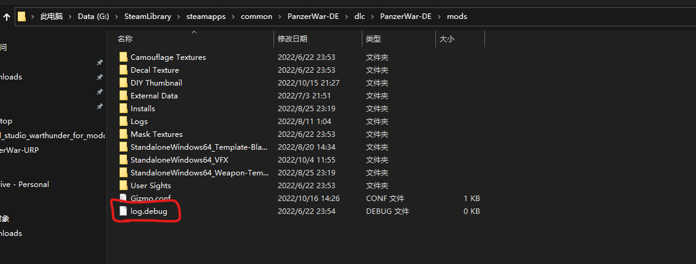

3. 游戏运行日志显示 Displaying the Game Runtime Log
游戏日志是用于分析游戏卡死原因的主要手段之一。
The game log is one of the main ways to analyze why the game freezes.
开启游戏日志 Enabling the Game Log
出于性能考虑，游戏默认关闭日志。若需要开启，请在模组文件夹中新建一个空文件并命名为 log.debug。请确认系统显示了文件扩展名，避免实际文件名变成 log.debug.txt。
For performance reasons, the game disables logging by default. To enable it, create an empty file named log.debug in the mods folder. Make sure your system is showing file extensions, so that the actual file name does not end up as log.debug.txt.

模组文件夹各平台路径
Path of the mods folder on each platform
安卓决定版：/sdcard/Android/data/com.ShanghaiWindy.PanzerWarDEM/files/mods/
Android Definitive Edition: /sdcard/Android/data/com.ShanghaiWindy.PanzerWarDEM/files/mods/
安卓普通版：/sdcard/Android/data/com.ShanghaiWindy.PanzerWarOpenSource/files/mods/
Android Standard Edition: /sdcard/Android/data/com.ShanghaiWindy.PanzerWarOpenSource/files/mods/
电脑普通版：SteamLibrary\steamapps\common\PanzerWar-DE\dlc\PanzerWar\mods
PC Standard Edition: SteamLibrary\steamapps\common\PanzerWar-DE\dlc\PanzerWar\mods
电脑决定版：SteamLibrary\steamapps\common\PanzerWar-DE\dlc\PanzerWar-DE\mods
PC Definitive Edition: SteamLibrary\steamapps\common\PanzerWar-DE\dlc\PanzerWar-DE\mods
电脑HDRP版：SteamLibrary\steamapps\common\PanzerWar-DE\dlc\PanzerWar-DE-HDRP\mods
PC HDRP Edition: SteamLibrary\steamapps\common\PanzerWar-DE\dlc\PanzerWar-DE-HDRP\mods
对于安卓设备，装有 adb 环境，则也可以使用 如下 adb 命令
On an Android device with adb installed, you can also use the following adb command:
adb shell touch /sdcard/Android/data/com.ShanghaiWindy.PanzerWarDEM/files/mods/log.debug
调试日志显示 Viewing the Debug Log
然后，你就可以看到游戏内调试窗口显示的运行日志。使用方法: 点击右上角自定义，拉到最下面，开启调试日志。 点击新出现的框，查看报错。
After that, you can see the runtime log in the in-game debug window. How to use it: click Customize in the upper-right corner, scroll down to the bottom, and turn on the debug log. Click the box that appears to view the errors.
电脑版日志文件 Log Files on PC
电脑普通版： C:\Users\你的用户名\AppData\LocalLow\ShanghaiWindy\PanzerWar\Player.log
PC Standard Edition: C:\Users\YourUserName\AppData\LocalLow\ShanghaiWindy\PanzerWar\Player.log
电脑决定版： C:\Users\你的用户名\AppData\LocalLow\ShanghaiWindy\PanzerWar-DE\Player.log
PC Definitive Edition: C:\Users\YourUserName\AppData\LocalLow\ShanghaiWindy\PanzerWar-DE\Player.log